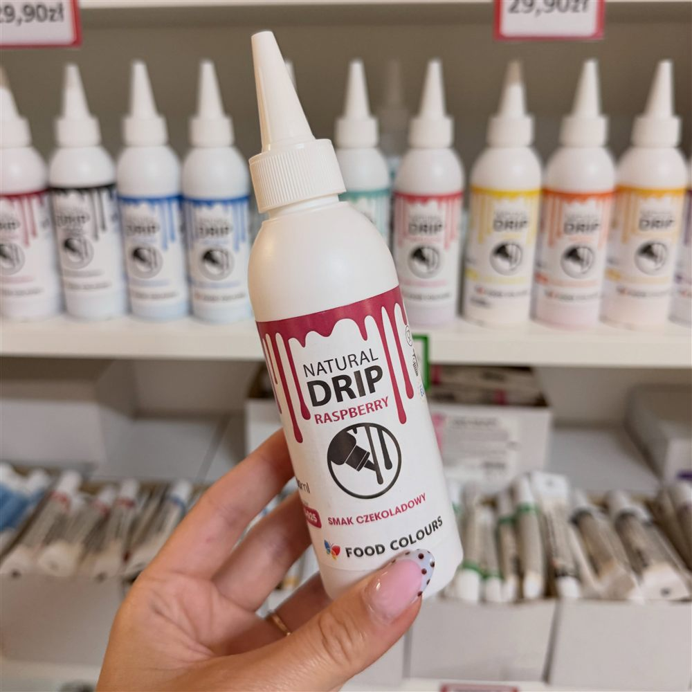
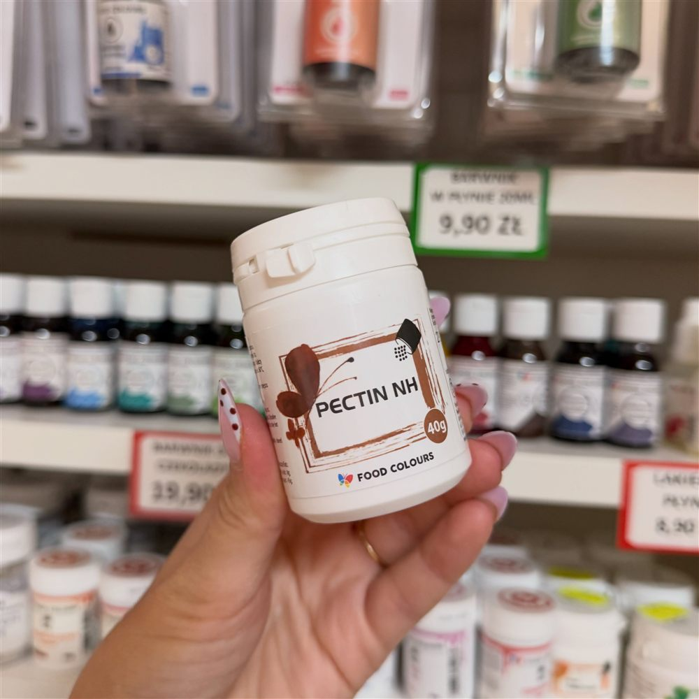
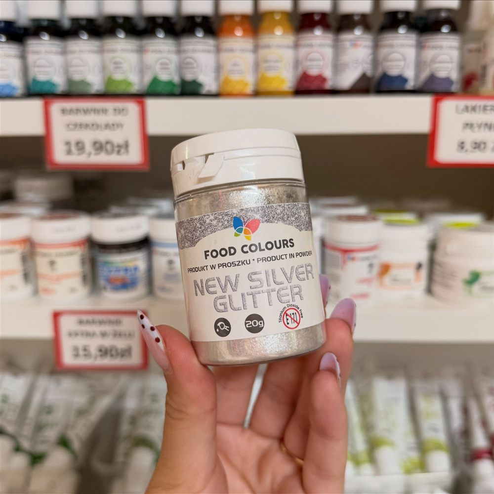
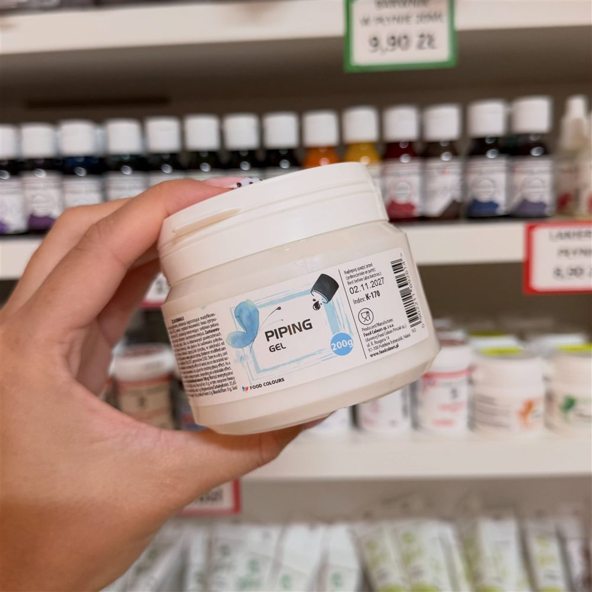
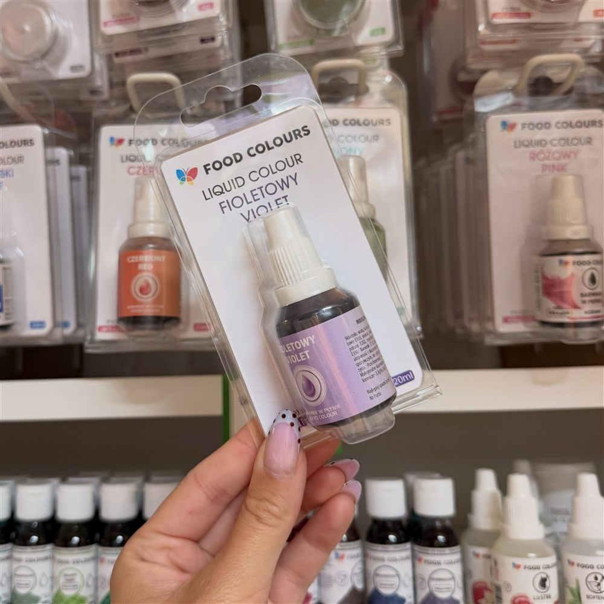
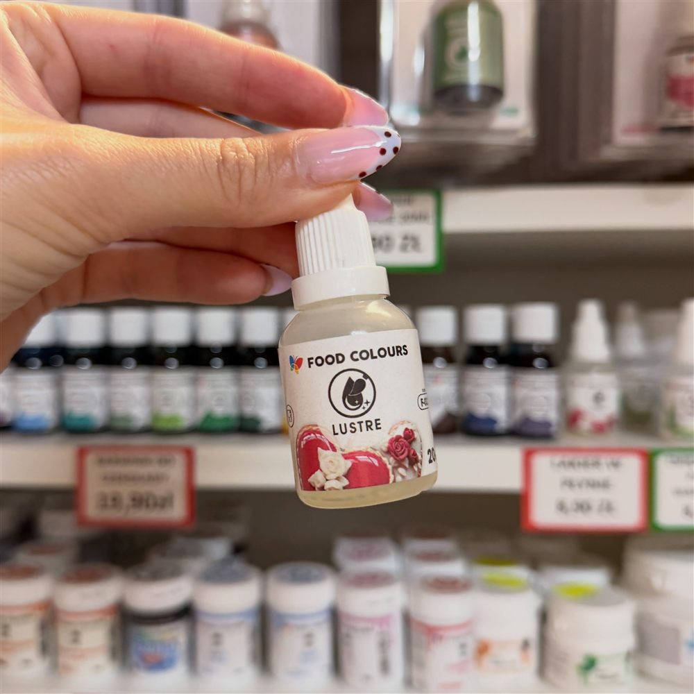

Nasz asortyment
Wszystko, czego potrzebuje Twój lokal
Od jednorazowych kubków po środki czystości — wybierz kategorię i przejrzyj katalog.
Przyprawy, bakalie, artykuły cukiernicze i wędliniarskie, woreczki HDPE, pojemniki oraz środki czystości — wszystko w jednym miejscu.

Od jednorazowych kubków po środki czystości — wybierz kategorię i przejrzyj katalog.
Zaopatrz lokal, sklep lub firmę podczas jednej wizyty.
Kupujesz w opakowaniach zbiorczych, w cenach dopasowanych do potrzeb biznesu.
Opakowania, naczynia, artykuły cukiernicze i chemia — bez jeżdżenia po kilku dostawcach.
Jesteśmy na miejscu — doradzimy przy doborze opakowań i przygotujemy zamówienie do odbioru.
Sprawdź asortyment na stronie i zanotuj produkty, które Cię interesują.
Potwierdzimy dostępność, ceny i przygotujemy ofertę dla Twojej firmy.
Towar czeka na Ciebie w hurtowni w Kwidzynie.
Zdjęcia z naszego sklepu w Kwidzynie.





Hurtownia artykułów spożywczych: przypraw, bakalii, artykułów do wyrobów wędliniarskich i cukierniczych, woreczków HDPE, pojemników i środków czystości.